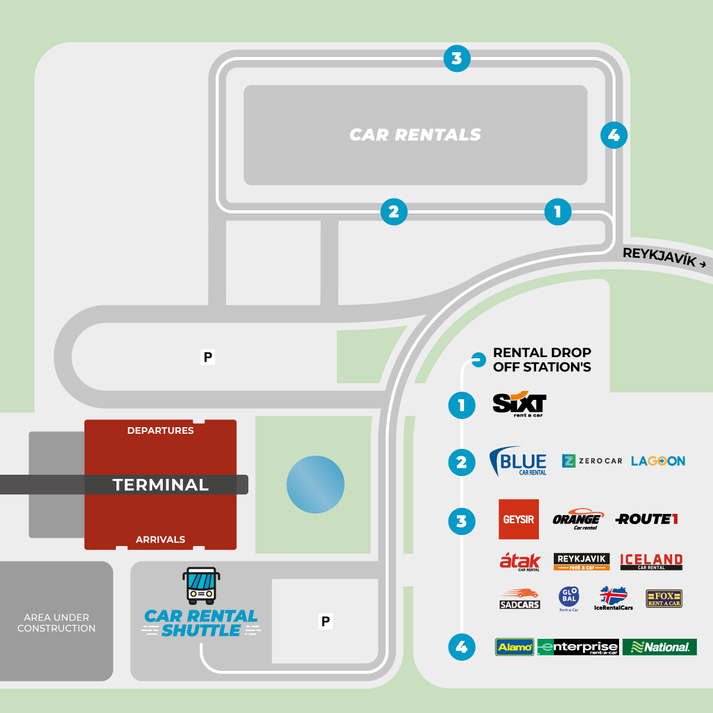

Car Rental in Iceland
Already booked a Toyota RAV4 in Blue Car Rental ,Booking ID: #330134,Total: 160.991 ISK.
A tip from somebody in TripAdvisor for Blue Car Rental is not to waste time waiting for the shuttle bus at Keflavik airport. If you turn left as you exit customs towards Hertz/Avis etc and leave the airport building on that side, Blue Car rental is about 300m away just hidden from view by the hotel they are building. The walk is about the same as the distance through the car part to the shuttle bus pick-up and will be much quicker than the wait and ride.
Scan this QR Code at arrival for a faster and personalized service, when you pick-up your car.
2023 Toyota RAV4/Fuel tank capacity
55 L。
Gas price is 314.48 Icelandic Krona/Liter。
Pick up
Once you clear customs and enter the arrivals hall, the car rental shuttle parking space is right outside – next to “Flybus Parking”. This shuttle will take you to the Rental Car Area where Blue Car Rental will be your second stop on its route. Quite convenient and easy to find.
The shuttle runs from 06:00 – 18:00 every day with approximately 15 minutes intervals. If you are picking up after 18:00 we ask you to walk over to our delivery office. Simply exit the airport on the departure side and there you can see our delivery office across the parking lot.
Our delivery office at the Keflavik International Airport is located within 4 minutes walking distance from the airport at Blikavellir 3. Renters are also more than welcome to take the walk over to us during the day.
Drop off
Please bring your rental car to us at our Keflavik Airport location at Blikavellir 3, Blue Car Rental headquarters at the airport area for a quick inspection. The Airport Shuttle drives by every few minutes and will take you to the airport once you have dropped of the rental car.
We encourage you to go to the airport first and empty the vehicle. We ask that only the driver brings the car back for inspection.
